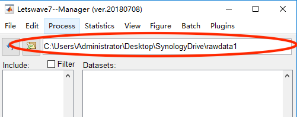
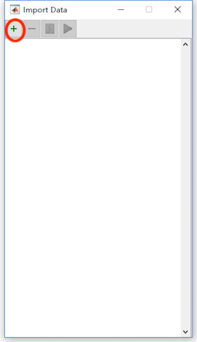
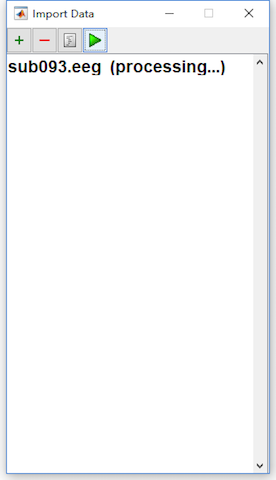
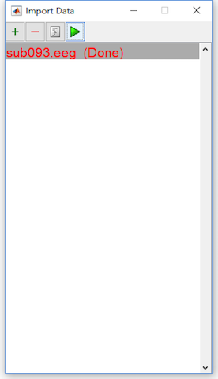
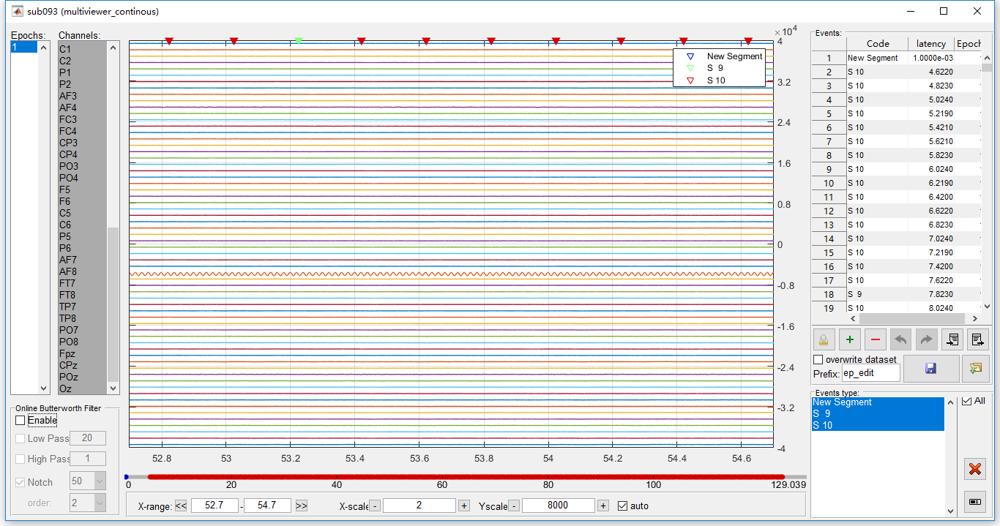
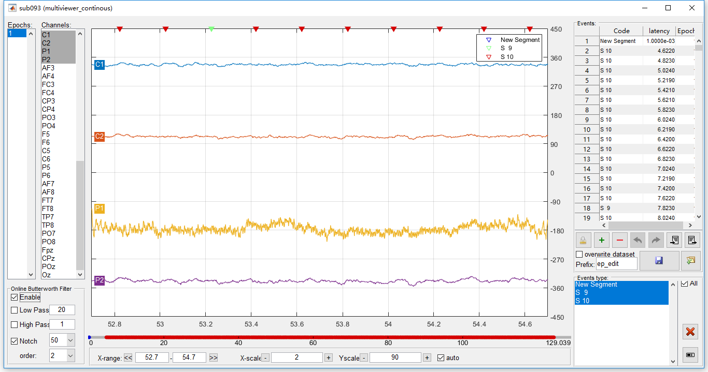

1. Software Preparing
Letswave7 is a toolbox for EEG signal processing based on Matlab under the platform of Windows, Mac OSX, and Linux or Unix. Before the use of Letswave7, Matlab should be download and installed. The use of Letswave7 depends on Matlab toolbox of Signal Processing Toolbox, Wavelet Toolbox, Statistics and Machine Learning Toolbox. Make sure these toolbox has been installed during the installation of Matlab.
You can download the package of Letswave7 directly from Github or the mirror site. For Letswave installation, unzip the file you download into the folder of your choice. Add the folder into the the path of Matlab. Input “letswave7” in the commond windows of Matlab to check whether the install is successful or not. Click here for more information about the download and setup.
2. Dataset Preparing
Firstly, download the tuorial dataset (12M). Unzip the rawdata1.zip file, there are three file, which are sub093.eeg, sub093.vhdr, and sub093.vmrk.
It is a P300 experiment for one subject, recorded by BrainAmp (Brain Products GmbH, Germany) with 64 channels, 1000Hz sampling rate, and referenced to FCz. Visual oddball experiment with the red as the target stimuli (marked as “S 9”) and white as the nontarget stimuli (marked as “S 10”) on the screen. Each square lasts 80ms with the ISI 200ms. 600 trials of the stimuli in all is arranged in a two minutes session, in which target stimuli come with the possibility of 5%. The participant is asked to count the number of red square and report after the session to make the participant keep attention on the screen.
3. Dataset Import
Open Matlab, and input “letswave7” in the commond windows of Matlab to open Letswave7. Set the path of letswave to the folder of the dataset, like “C:\Users\Adminstrator\Desktop\SynologyDrive\rawdata1” here for example.

Select File->Import->Import EEG/MEG datafiles in the menu of the manager module, then the dialog of import data will pop up. Press the button add files to add the file sub093.eeg. Press the the button import files to import the dataset. During the importing, it will display “processing”. Once the importing finished, the corresponding dataset will turn red and display “done”. Close the dialog of import data, the dataset “sub093” will be appeared in the manager module.



4. Dataset Checking
Selecting the dataset sub093, and click View->Continous Data Viewer in the menu to check the data quality of the imported dataset.

In the viewer of the continous data, it can be see the channel P1 is obviously abnormal. A strong 50Hz power frequency interference covers the signal. Even after a notch filter, there is still a strong noise. Hence in the following steps, we treat channel P1 as a bad electrode, which should be interpolated by the surround channels.

5. Summary
In this chapter, the demonstrate the basic process of data import. Once the dataset has been imported, it will be appeared in the data list of the manager module. In Letswave7, one dataset is consisted with two files, which is .lw6 and .mat files. Currently, Letswave7 is able to import the data file from the following mainstream format,
- EEGLAB
- ANT Neuro, eeprobe/cnt-rif
- NeuroScan
- Biosemi BDF
- BrainVision
- Electrical Geodesics, Inc. (EGI)
- Generic standard formats
For the other format data files, if it can be conversed to the format above, then it can be imported by Letswave7. Other if the data can be loaded by Matlab, it can also be imported by Letswave7.